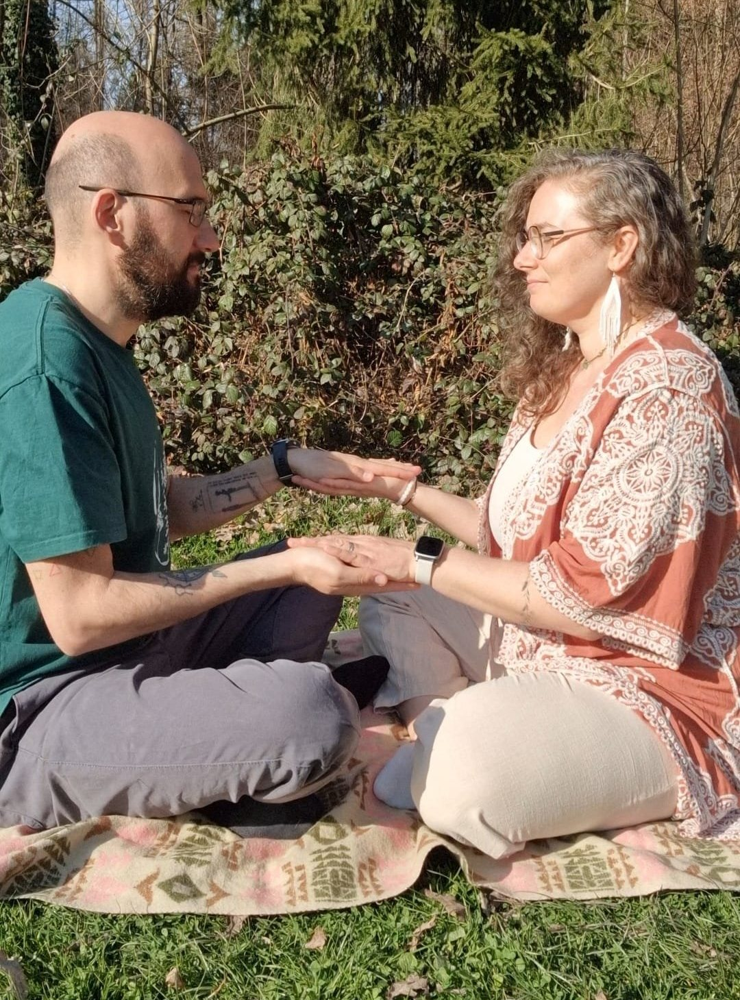
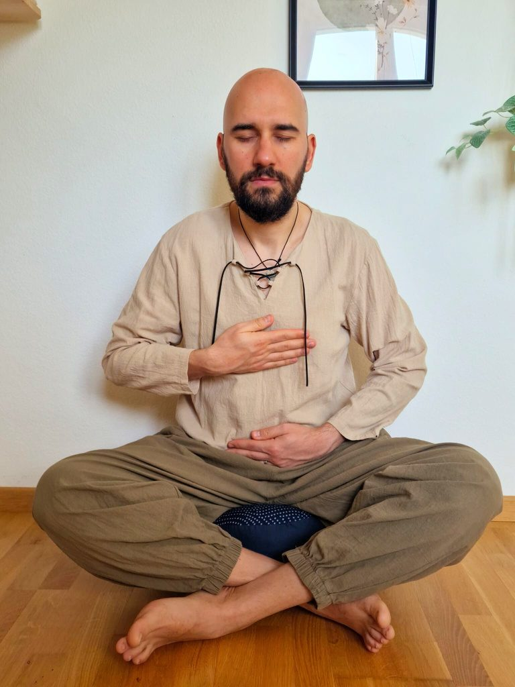

Spații mici de grup, în natură
Cercul Becoming
O practică în aer liber în care meditația, lucrul cu părțile interioare, munca somatică și Reiki se întâlnesc — ținute în liniștea naturii.

Ce este
Un câmp împărtășit, ținut în natură
Cercul Becoming este un spațiu mic de grup — un loc în care o călătorie inspirată din meditație și lucrul cu părțile interioare se întâlnește cu Reiki.
Ne adunăm afară, în natură. Un cadru natural îmblânzește mintea și deschide ceea ce tinde să rămână închis între pereți. Câmpul grupului lasă să apară ceva unic — o ținere împărtășită care adâncește devenirea, atât individuală, cât și colectivă.
Nu ai nevoie de experiență anterioară. Ai nevoie doar de disponibilitatea de a încetini și de a întâlni ceea ce e viu în tine, în ritmul tău.
Forma muncii
Patru mișcări
Conectare
Sosim, așezăm sistemul nervos prin respirație și intrăm în contact — cu pământul, cu trupul, cu grupul și cu spațiul viu din jur.
Conștientizare
Prin mișcare lentă și atenție blândă, lăsăm trupul să ne arate unde ține — ascultând, nu analizând, observând ceea ce e aici.
Eliberare
Întâmpinăm cu grijă tensiunea pe care o găsim — pendulare, dialog cu părțile și Reiki — lăsând să se înmoaie și să se miște ceea ce e pregătit.
Integrare
Timp singur în natură, împărtășire opțională și o închidere colectivă — astfel încât ceea ce s-a deschis să aibă loc să se așeze și să devină al tău.

Cum se desfășoară o sesiune
O curgere blândă, fără grabă
Fiecare întâlnire trece printr-un arc firesc — în jur de nouăzeci de minute, cu pauze lungi și fără presiunea de a performa:
- Așezare — respirație pentru a sosi și a calma sistemul nervos
- Intenție — o practică energetică pentru a așeza ceea ce aduci și ceea ce ești gata să eliberezi
- Mișcare și contact cu natura — mișcare lentă care se deschide spre spațiul natural din jur
- Pendulare — întâmpinarea a două sau trei zone de tensiune pe care le arată trupul
- Lucru cu părțile — un dialog ghidat cu partea cea mai vie, pas cu pas
- Reiki de grup — câteva minute de ținere energetică împărtășită
- Integrare solo — timp liniștit într-un loc din natură pe care îl alegi
- Împărtășire și închidere — un cerc opțional, apoi o închidere colectivă
Ai pornit ca sub asediu. Ai trecut prin ce era acolo. Și mereu ai ajuns în același loc — un gol împăcat, liniștit, primitor. Din spațiul acela poți merge mai departe.
Detalii practice
Unde și când
Ne întâlnim în natură, într-un cadru liniștit în aer liber, cu loc să ne răsfirăm și să fim ținuți de spațiul din jur.
Grupul e ținut mic, ca să rămână un câmp intim și sigur. Locul exact de întâlnire, ora și ce să aduci ți le împărtășim după ce te înscrii — ca să putem ține spațiul cu grijă și să-l păstrăm pentru cei care chiar vin.
Nu trebuie să fii pregătit. Nu trebuie să știi ce cauți.
Dacă ceva în tine e atras de liniște, sinceritate și descoperire blândă, ești binevenit aici.
Acesta este The Becoming Field